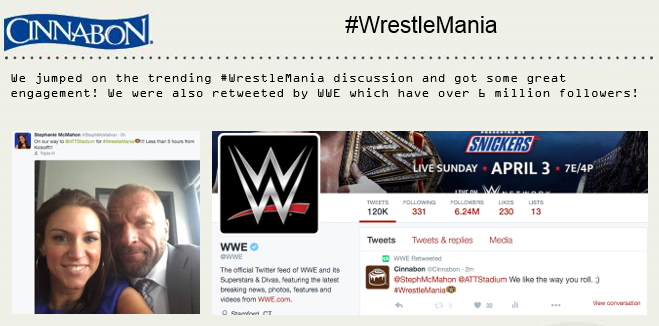
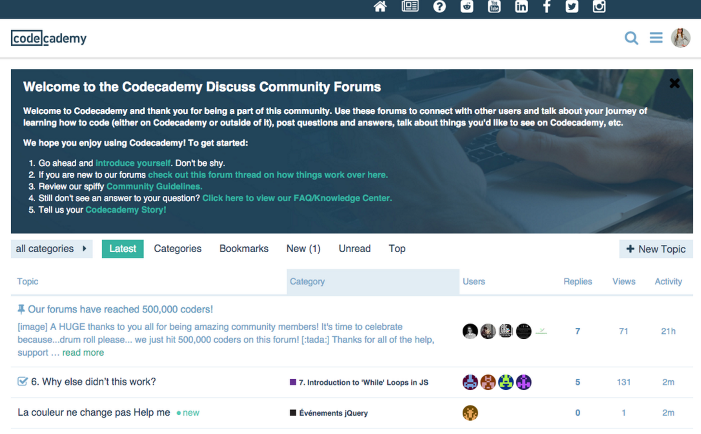
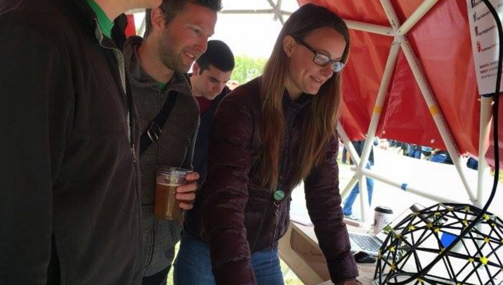
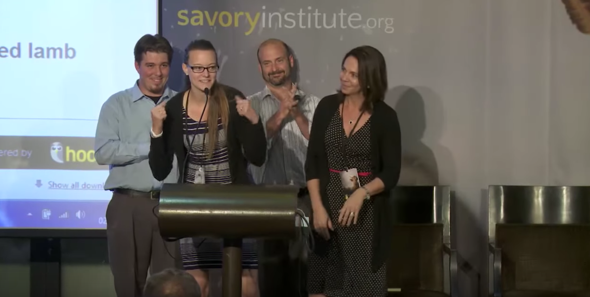
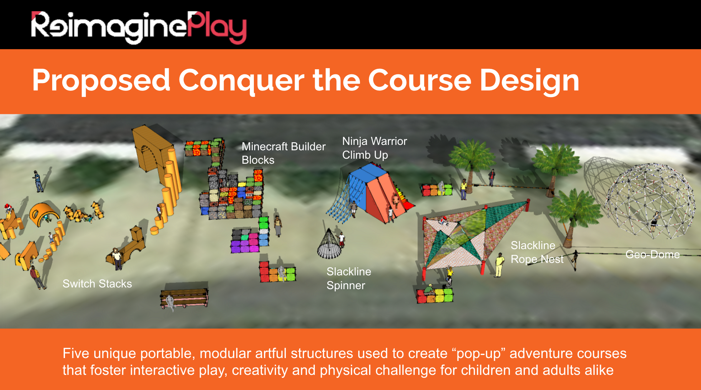

Experience
Work Experience

DreamFactory // Head of Community and Developer Relations
April 2016 - Current New York City, NY
Be The Change Revolutions // Community Manager Consultant
March 2016 - April 2016 York City, NY
Codecademy // Community Operations, Developer Relations
October 2015 - February 2016 New York City, NY
SketchUp (Trimble) // Community Manager
December 2014 - November 2015 Boulder, CO
Savory Institute // Office Manager, Executive Assistant, Technical and Customer (support) Specialist
July 2013 - December 2014 Boulder, CO#SideHustle Experience
